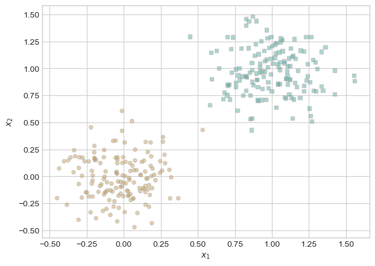
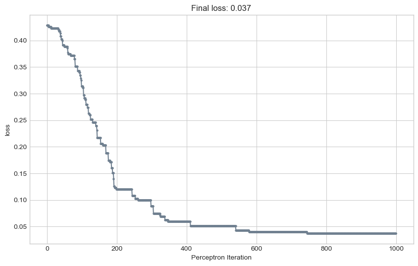
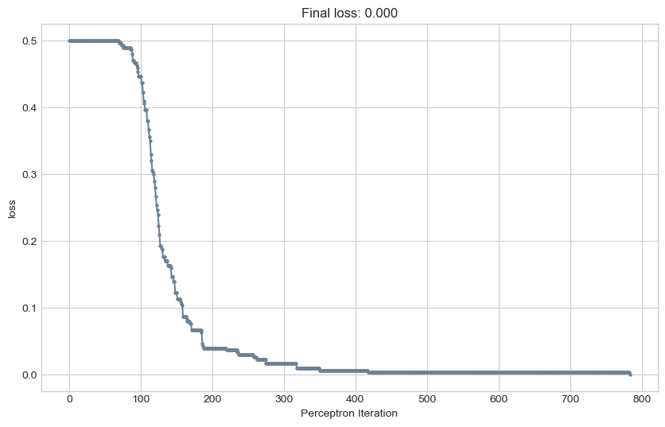

For this blog post I implemented the perceptron algorithm. I then ran several experiments to visualize the changes to my model each iteration and see the improvement of my loss. I investigated how the perceptron implementation changed when given linearly separable data vs not and 2 dimension vs more dimensional data. I also implemented mini-batch and ran experiments to see how this impacted algorithm outcomes. Through these steps, I learned the perceptron algorithm works and how that functionality can change to accommodate different data. Ultimately, I learned that the perceptron algorithm works well to address many different data forms by continuously updating the model based on misclassified points.
In perceptron.py I implemented 5 functions: score, predict, loss, grad, and step. Here I will go through to briefly explain each function.
score: Calculate the score by taking the cross product of the data input and the weights.
predict: Calculates y_hat where y_hat is 1 when the score is greater than or equal to 0, and 0 otherwise.
loss: Finds loss by calculating mean of misclassified data points.
grad: Calculates score. If misclassified, returns gradient of cross product of data input and output \[\mathbb{1}\left[s_i y_{i} < 0 \right] y_{i} \mathbf{x}_{i}\] Otherwise, return 0 gradient.
step: Calls and returns loss function. Adds gradient from grad function to model.
In perceptron_minibatch.py I implement the same functions just altering grad to accept a submatrix of the feature vector X. I will discuss those changes later in the blog post.
The autoreload extension is already loaded. To reload it, use:
%reload_ext autoreload
Implement perceptron on linearly separable data
First, I used data from warmup to create a plot of linearly separable data.
import torchfrom matplotlib import pyplot as pltplt.style.use('seaborn-v0_8-whitegrid')torch.manual_seed(1234)def perceptron_data(n_points =300, noise =0.2, p_dims =2): y = torch.arange(n_points) >=int(n_points/2) X = y[:, None] + torch.normal(0.0, noise, size = (n_points,p_dims)) X = torch.cat((X, torch.ones((X.shape[0], 1))), 1)# convert y from {0, 1} to {-1, 1} y =2*y -1return X, ydef plot_perceptron_data(X, y, ax): targets = [-1, 1] markers = ["o" , ","]for i inrange(2): ix = y == targets[i] ax.scatter(X[ix,0], X[ix,1], s =20, c = y[ix], facecolors ="none", edgecolors ="darkgrey", cmap ="BrBG", vmin =-2, vmax =2, alpha =0.5, marker = markers[i]) ax.set(xlabel =r"$x_1$", ylabel =r"$x_2$")fig, ax = plt.subplots(1, 1)X, y = perceptron_data()plot_perceptron_data(X, y, ax)

See if perceptron.py code is functional by run the “minimal training loop” code from this section of the notes and eventually achieve loss = 0 on linearly separable data.
# instantiate a model and an optimizerp = Perceptron() opt = PerceptronOptimizer(p)loss =1.0# for keeping track of loss valuesloss_vec = []n = X.size()[0]while loss >0: # only terminates if data is linearly separable# not part of the update: just for tracking our progress loss = p.loss(X, y) loss_vec.append(loss)# pick a random data point i = torch.randint(n, size = (1,)) x_i = X[[i],:] y_i = y[i]# perform a perceptron update using the random data point opt.step(x_i, y_i)
Then I showed visualizations of the data, the separating line, and the evolution of the loss function during training.
I copied the graph from notes in class to show the change of the loss in iterations of the perceptron algorithm.
This shows that the loss gradually decreases over the iterations and eventually reaches 0 (possible as the data is linearly separable).
I then used some of the code from class notes again to rerun and visualize how the algorithm updates the weights over iterations.
def draw_line(w, x_min, x_max, ax, **kwargs): w_ = w.flatten() x = torch.linspace(x_min, x_max, 101) y =-(w_[0]*x + w_[2])/w_[1] l = ax.plot(x, y, **kwargs)
from perceptron import Perceptron, PerceptronOptimizertorch.manual_seed(1234567)# initialize a perceptron p = Perceptron()opt = PerceptronOptimizer(p)p.loss(X, y)# set up the figureplt.rcParams["figure.figsize"] = (7, 5)fig, axarr = plt.subplots(2, 3, sharex =True, sharey =True)markers = ["o", ","]marker_map = {-1 : 0, 1 : 1}# initialize for main loopcurrent_ax =0loss =1loss_vec = []while loss >0: ax = axarr.ravel()[current_ax]# save the old value of w for plotting later old_w = torch.clone(p.w)# pick a random data point i = torch.randint(n, size = (1,)) x_i = X[[i],:] y_i = y[i]# make an optimization step -- this is where the update actually happens# now p.w is the new value local_loss = opt.step(x_i, y_i)# if a change was made, plot the old and new decision boundaries# also add the new loss to loss_vec for plotting belowif (local_loss >0): plot_perceptron_data(X, y, ax) draw_line(old_w, x_min =-1, x_max =2, ax = ax, color ="black", linestyle ="dashed") loss = p.loss(X, y).item() loss_vec.append(loss) draw_line(p.w, x_min =-1, x_max =2, ax = ax, color ="black") ax.scatter(X[i,0],X[i,1], color ="black", facecolors ="none", edgecolors ="black", marker = markers[marker_map[y[i].item()]])# draw_line(w, -10, 10, ax, color = "black") ax.set_title(f"loss = {loss:.3f}") ax.set(xlim = (-1, 2), ylim = (-1, 2))if(current_ax <5): current_ax +=1else:breakplt.tight_layout()
This visualization shows how the perceptron updates the predictions every time the loss is greater than 0.
Implement perceptron on data that is not linearly separable
I changed class notes code to include 50 points that overlap the existing classes. This will mean that the data is not necessarily linearly separable like the data before.
import torchfrom matplotlib import pyplot as pltplt.style.use('seaborn-v0_8-whitegrid')torch.manual_seed(1234)def perceptron_data_overlap(n_points=300, noise=0.2, p_dims=2, overlap_points=50): y = torch.arange(n_points) >=int(n_points /2) X = y[:, None] + torch.normal(0.0, noise, size=(n_points, p_dims)) X = torch.cat((X, torch.ones((X.shape[0], 1))), 1)# Add overlapping points within the range of existing points overlap_X = torch.rand(overlap_points, p_dims) * (X.max() - X.min()) + X.min() overlap_X = torch.cat((overlap_X, torch.ones((overlap_X.shape[0], 1))), 1) X = torch.cat((X, overlap_X), dim=0)# Convert y from {0, 1} to {-1, 1} y = torch.cat((2* y -1, torch.ones(overlap_points, dtype=torch.long))) # Label the overlapping points as class 1return X, ydef plot_perceptron_data_overlap(X, y, ax): targets = [-1, 1] markers = ["o", ","]for i inrange(2): ix = y == targets[i] ax.scatter(X[ix, 0], X[ix, 1], s=20, c=y[ix], facecolors="none", edgecolors="darkgrey", cmap="BrBG", vmin=-2, vmax=2, alpha=0.5, marker=markers[i]) ax.set(xlabel=r"$x_1$", ylabel=r"$x_2$")fig, ax = plt.subplots(1, 1)X, y = perceptron_data_overlap()plot_perceptron_data_overlap(X, y, ax)plt.show()
Next, I reran the perceptron algorithm. The difference with not linearly separable data is that I cannot run the algorithm until the loss is 0 as it will never be 0 for this data. Instead, I ran the data for 1000 iterations based on Pr.Chodrow’s advice in the blog post description. I also including code to visualize model updates.
torch.manual_seed(1234567)# initialize a perceptron p = Perceptron()opt = PerceptronOptimizer(p)X, y = perceptron_data_overlap()p.loss(X, y)# set up the figureplt.rcParams["figure.figsize"] = (7, 5)fig, axarr = plt.subplots(2, 3, sharex =True, sharey =True)markers = ["o", ","]marker_map = {-1 : 0, 1 : 1}# initialize for main loopcurrent_ax =0loss =1loss_vec = []for index inrange(0, 1000): ax = axarr.ravel()[current_ax]# save the old value of w for plotting later old_w = torch.clone(p.w)# pick a random data point i = torch.randint(n, size = (1,)) x_i = X[[i],:] y_i = y[i]# make an optimization step -- this is where the update actually happens# now p.w is the new value local_loss = opt.step(x_i, y_i)# if a change was made, plot the old and new decision boundaries# also add the new loss to loss_vec for plotting belowif (local_loss >0): plot_perceptron_data_overlap(X, y, ax) draw_line(old_w, x_min =-1, x_max =2, ax = ax, color ="black", linestyle ="dashed") loss = p.loss(X, y).item() loss_vec.append(loss) draw_line(p.w, x_min =-1, x_max =2, ax = ax, color ="black") ax.scatter(X[i,0],X[i,1], color ="black", facecolors ="none", edgecolors ="black", marker = markers[marker_map[y[i].item()]])# draw_line(w, -10, 10, ax, color = "black") ax.set_title(f"loss = {loss:.3f}") ax.set(xlim = (-1, 2), ylim = (-1, 2))if(current_ax <5): current_ax +=1else:breakplt.tight_layout()

I then reran code to show the updates of the loss.
plot_loss(loss_vec)
Here we can see that the loss decreases over time but does not reach 0 like in the linearly separable case.
Implement perceptron on data with more than 2 dimensions
The only difference here is that I created data with more than 5 dimensions.
X, y = perceptron_data_overlap(n_points =300, noise =0.2, p_dims =5)
I ran the perceptron algorithm for 1000 iterations, without knowing if the data is linearly separable.
torch.manual_seed(1234567)# initialize a perceptron p = Perceptron()opt = PerceptronOptimizer(p)loss =1.0# for keeping track of loss valuesloss_vec_dimen = []n = X.size()[0]for index inrange(0, 1000): i = torch.randint(n, size = (1,)) x_i = X[[i],:] y_i = y[i]# perform a perceptron update using the random data point local_loss = opt.step(x_i, y_i)if (local_loss >0): loss = p.loss(X, y).item() loss_vec_dimen.append(loss)
I then visualized the loss over time.
plot_loss(loss_vec_dimen)
Because the visualization of the loss vector shows that data never fully reaches a loss of 0 after 1000 iterations, we can conclude that the data is probably not linearly separable.
Implement Minibatch
I then modified my perceptron.grad() method so that it accepts a submatrix of the feature matrix X of size k*p. I changed the code from:
def grad(self, X, y): # should correctly return the “update” part of the perceptron update
s = self.score(X)
# if misclassified, calculate update
if s*y <= 0:
update_val = X*y
return update_val[0,:]
else:
return torch.zeros_like(self.w)
to
def grad(self, X, y): # should correctly return the “update” part of the perceptron update
s = self.score(X)
# choose random learning rate
learning_rate = 0.3
# if misclassified, calculate update
misclass = s*y <= 0
update_val_row = X*y[:,None]
update_val = update_val_row * misclass[:,None]
r = learning_rate * torch.mean(update_val, 0)
return r
This change allowed the grad function to accept submatrices of the feature matrix X instead of just a single point.
Minibatch Perceptron Experiments
I then performed experiments and create visualizations to demonstrate the following:
For linearly separable data, when k = 1, mini-batch perceptron performs similarly to regular perceptron.
X, y = perceptron_data()
torch.manual_seed(1234567)# initialize a perceptron p = Perceptron_mini()opt = PerceptronOptimizer_mini(p)loss =1.0# for keeping track of loss valuesloss_vec_mini = []n = X.size()[0]while loss >0:# K is 10 k =1# get a random submatrix of the feature matrix X and target vector y to implement minibatch ix = torch.randperm(X.size(0))[:k] x_i = X[ix,:] y_i = y[ix] local_loss = opt.step(x_i, y_i)if (local_loss >0): loss = p.loss(X, y).item() loss_vec_mini.append(loss)
plot_loss(loss_vec_mini)
Still with k=1, the perceptron with mini-batch performs similarly to the normal perceptron with overlapping data.
X, y = perceptron_data_overlap()
torch.manual_seed(1234567)# initialize a perceptron p = Perceptron_mini()opt = PerceptronOptimizer_mini(p)loss =1.0# for keeping track of loss valuesloss_vec_mini = []n = X.size()[0]for index inrange(0, 1000):# K is 10 k =1# get a random submatrix of the feature matrix X and target vector y to implement minibatch ix = torch.randperm(X.size(0))[:k] x_i = X[ix,:] y_i = y[ix] local_loss = opt.step(x_i, y_i)if (local_loss >0): loss = p.loss(X, y).item() loss_vec_mini.append(loss)
plot_loss(loss_vec_mini)
For linearly separable data when k = 10, mini-batch perceptron can still find a separating line in 2d.
X, y = perceptron_data()
torch.manual_seed(1234567)# initialize a perceptron p = Perceptron_mini()opt = PerceptronOptimizer_mini(p)loss =1.0# for keeping track of loss valuesloss_vec_mini = []n = X.size()[0]while loss >0:# K is 10 k =10# get a random submatrix of the feature matrix X and target vector y to implement mini-batch ix = torch.randperm(X.size(0))[:k] x_i = X[ix,:] y_i = y[ix] local_loss = opt.step(x_i, y_i)if (local_loss >0): loss = p.loss(X, y).item() loss_vec_mini.append(loss)
plot_loss(loss_vec_mini)
When k = n (that is, the batch size is the size of the entire data set), mini-batch perceptron can converge even when the data is not linearly separable, provided that the learning rate is small enough.
X, y = perceptron_data_overlap()
torch.manual_seed(1234567)# initialize a perceptron p = Perceptron_mini()opt = PerceptronOptimizer_mini(p)loss =1.0# for keeping track of loss valuesloss_vec_mini = []n = X.size()[0]while loss >0:# K is n k = n# get a random submatrix of the feature matrix X and target vector y to implement mini-batch ix = torch.randperm(X.size(0))[:k] x_i = X[ix,:] y_i = y[ix] local_loss = opt.step(x_i, y_i)if (local_loss >0): loss = p.loss(X, y).item() loss_vec_mini.append(loss)
plot_loss(loss_vec_mini)

Here the loss goes to 0, showing that the algorithm does converge with k=n even with overlapping data.
Discussion Question
What is the runtime complexity of a single iteration of the perceptron algorithm? Does the runtime complexity of a single iteration depend on the number of data points n? What about the number of features p?
For a single iteration of the perceptron algorithm the dot product is taken between w and one row of the feature matrix X, as each row represents a data point. The size of the row of the feature matrix is p, the number of dimensions of the data. Therefore a single iteration’s runtime is O(p).
If you implemented minibatch perceptron, what is the runtime complexity of a single iteration of the minibatch perceptron algorithm?
With the mini-batch algorithm, we take the dot product between each data point in the batch instead of just one for each iteration. Therefore it is O(kp) for each algorithm iteration.
Conclusion
Through this blog post, I learned many important lessons in Machine Learning and computing in general. Firstly, I was able to implement the perceptron algorithm and understand the steps that go into updating a machine learning model. Through my experiments, I validates that my implementation were correct. I learned how to analyze the updates of perceptron and see how the algorithm functions on different data. I developed my abilities to visualize data and use those visualizations to understand both the input data and the algorithm itself. Ultimately, I was able to successfully implement and use the perceptron algorithm for linearly separable data, non-linearly separable data, and data with more than 2 dimensions. With mini-batch, I was able to demonstrate the algorithm functioned similarly to a single point with k=1, can still find a separating line in linearly separable data with k=10, and when k=n converge even without linearly separable data.